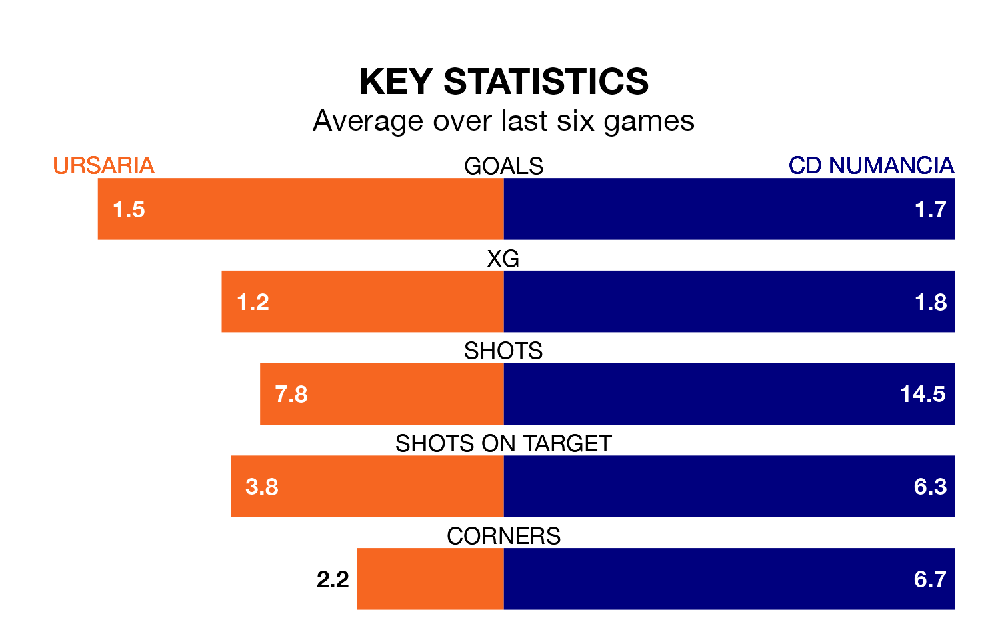

Ursaria host CD Numancia on Sunday at the Estadio Polideportivo La Juventud in the Segunda División RFEF Group 5.
In their last league match, on April 14, Ursaria beat Illescas 2-1 away, with their goal scored by Jacobo Alcalde Tellado.
Numancia also won, 2-0 at home against UD San Fernando, with Andrei Daniel Lupu (two) scoring their goals.
Numancia are top of the table after 31 games, of which they have won 16 and drawn six, earning 54 points.
Ursaria are 10 places behind the visitors in 11th, with 11 wins and eight draws putting them on 41 points.
With 49 goals in 31 games so far this season, Numancia are the league's second-highest scorers with 1.6 goals per game. And they are conceding at an average rate, letting in 34 goals at a rate of 1.1 per game.
The home team, meanwhile, are below average scorers, with 1.0 goal per game, compared to a league average of 1.1. They have conceded 1.2 goals per game.
Ursaria are in reasonable form in the Segunda División RFEF Group 5, with four wins and two losses from their last six games.
And also with four wins and two losses over that period, Numancia's form is identical – they have both taken 12 points from 18.
Updated: 15:40 (UTC), 18/04/24